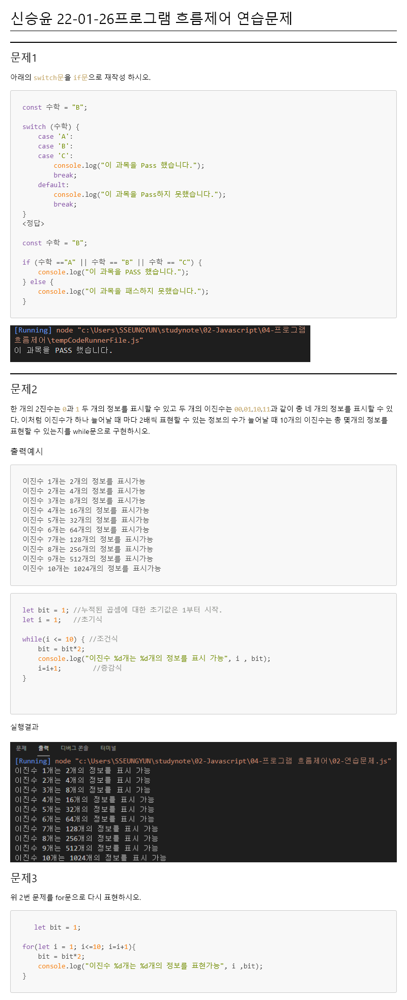

아래의 switch문을 if문으로 재작성 하시오.
const 수학 = "B";
switch (수학) {
case 'A':
case 'B':
case 'C':
console.log("이 과목을 Pass 했습니다.");
break;
default:
console.log("이 과목을 Pass하지 못했습니다.");
break;
}
<정답>
const 수학 = "B";
if (수학 =="A" || 수학 == "B" || 수학 == "C") {
console.log("이 과목을 PASS 했습니다.");
} else {
console.log("이 과목을 패스하지 못했습니다.");
}

한 개의 2진수는 0과 1 두 개의 정보를 표시할 수 있고 두 개의 이진수는 00,01,10,11과 같이 총 네 개의 정보를 표시할 수 있다. 이처럼 이진수가 하나 늘어날 때 마다 2배씩 표현할 수 있는 정보의 수가 늘어날 때 10개의 이진수는 총 몇개의 정보를 표현할 수 있는지를 while문으로 구현하시오.
이진수 1개는 2개의 정보를 표시가능
이진수 2개는 4개의 정보를 표시가능
이진수 3개는 8개의 정보를 표시가능
이진수 4개는 16개의 정보를 표시가능
이진수 5개는 32개의 정보를 표시가능
이진수 6개는 64개의 정보를 표시가능
이진수 7개는 128개의 정보를 표시가능
이진수 8개는 256개의 정보를 표시가능
이진수 9개는 512개의 정보를 표시가능
이진수 10개는 1024개의 정보를 표시가능
let bit = 1; //누적된 곱셈에 대한 초기값은 1부터 시작.
let i = 1; //초기식
while(i <= 10) { //조건식
bit = bit*2;
console.log("이진수 %d개는 %d개의 정보를 표시 가능", i , bit);
i=i+1; //증감식
}
실행결과
위 2번 문제를 for문으로 다시 표현하시오.
let bit = 1;
for(let i = 1; i<=10; i=i+1){
bit = bit*2;
console.log("이진수 %d개는 %d개의 정보를 표현가능", i ,bit);
}